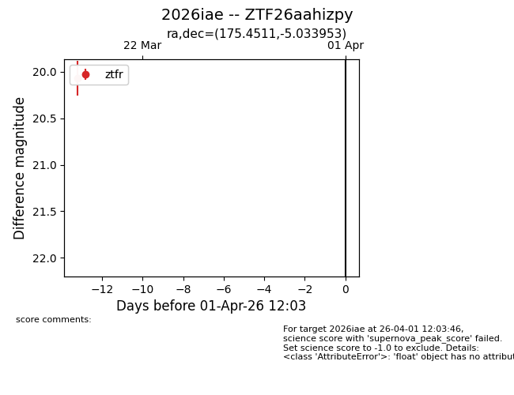
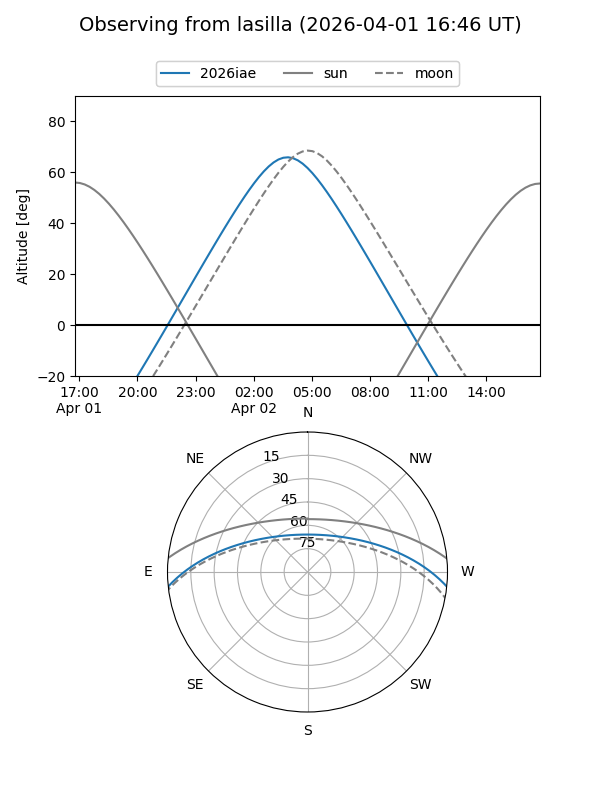
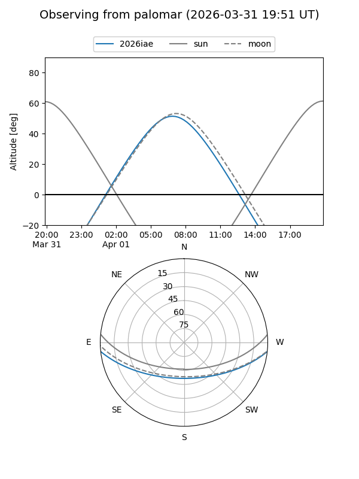

2026iae
Target 2026iae at 2026-04-01 12:07
Aliases and brokers:
FINK: link
Lasair: link
ALeRCE: link
TNS: link
YSE: link
alt names
ZTF26aahizpy (ztf,fink_ztf)
2026iae (tns,yse)
Coordinates:
equatorial (ra, dec) = 175.4511,-5.03395
equatorial (HMS+DMS) = 11:41:48.27,-05:02:02.23
galactic (l, b) = (272.7053,+53.70087)
Flags:
Photometry:
last ztfr=20.07
1 ztfr detections
Lightcurve

Visibility


Additional plots